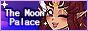
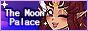

Wall of Links
 Wall of
Links
Wall of
Links
A list of cool neighbours, sites I like in general, and resource sites!! Inspired off Slushiecafe's layout since it hits how I see neighbours!! My button is available here, and on the sidebar (if on desktop).

A list of cool neighbours, sites I like in general, and resource sites!! Inspired off Slushiecafe's layout since it hits how I see neighbours!! My button is available here, and on the sidebar (if on desktop).
People I'm mutuals with and/or have traded buttons with!


 


As title says, sites that I like! Might it be their layout, their content, art, characters, etc.


Specific projects, or comics, that people are making!

Sites centric on categorizing resources (scripts/templates/images), are widgets, or have helpful tutorials.


Mouthful of a title, huh ... mostly will be using this section to denote what cliques/webrings I'm a part of, and what things I've adopted.


")